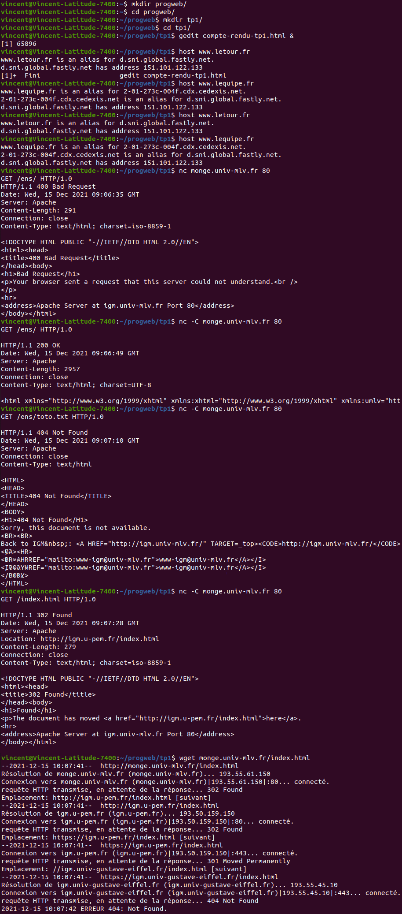

Vincent Jugé
1. J'écris mkdir progweb/ dans ma ligne de commande.
2. J'écris cd progweb/ puis mkdir tp1/ dans ma ligne de commande.
3. Comme demandé, j'écris cd tp1/ puis
gedit compte-rendu-tp1.html & dans ma ligne de commande.
GEdit m'ouvre alors un document texte, que je suis justement en train d'éditer.
4. Voilà, c'est fait, j'ai raconté ma vie !
1. Il manque une balise <meta charset="UTF-8"> dans l'en-tête du document.
Celle-ci est indispensable pour éviter tout problème d'encodage.
2. Les balises h1, h2 et h3 sont des balises de titre. Plus le numéro est petit,
plus le titre est important. h2 représente donc un sous-titre, et h3 un sous-sous-titre.
3. La balise p est une balise de paragraphe. Tout paragraphe commence avec <p>
et se termine avec </p>.
4. Voilà, c'est fait, j'ai raconté ma vie, mais en HTML !
1. J'accède à la machine www, située sur le domaine w3.org.
2. La première ligne m'indique l'adresse IPv4 de la machine.
La deuxième ligne m'indique l'adresse IPv6 de la machine.
es balises h1, h2 et h3 sont des balises de titre. Plus le numéro est petit,
plus le titre est important. h2 représente donc un sous-titre, et h3 un sous-sous-titre.
3. Ça marche toujours mais mon navigateur râle car le certificat fourni pour la connexion
HTTPS indique un nom de domaine dont je ne dispose pas (je n'ai plus qu'une adresse IP).
Répartir les adresses en nom de domaines permet d'avoir une hiérarchie symbolique utilisable
(et aussi des adresses qu'un être humain normalement constitué peut retenir).
4. Je vois la liste des machines traversées pour aller de mon ordinateur au serveur distant.
L'université est connectée au réseau renater.fr.
Je passe aussi par les réseaux ptolexic.com, akamai.com et
mit.edu.
5. Quand je tape host www.letour.fr en ligne de commande, on m'indique que la machine
www.letour.fr a pour adresse 151.101.122.133.
6. Quand je tape host www.lequipe.fr en ligne de commande, je constate avec stupeur
que l'on m'indique aussi l'adresse 151.101.122.133 !
Et quand je remplace www.lequipe.fr par cette adresse, dans mon URL,
je reçois un message d'erreur.
Si je tape www.letour.fr à la place, cette fois-ci, je me retrouve sur la page
d'accueil de www.letour.fr/fr.
Ce n'est pas surprenant, car plusieurs domaines cohabitent sur le même serveur, donc
sur la même adresse IP.
1. Quand on est sous Linux/Ubuntu, attention de ne pas oublier l'option -C de netcat.
Sinon on a des problèmes d'encodage (avec les retours à la ligne).
Le protocole HTTP corrsepond au port TCP 80.
L'en-tête de la réponse est :
HTTP/1.1 200 OK
Date: Fri, 10 Dec 2021 14:28:58 GMT
Server: Apache
Content-Length: 2957
Connection: close
Content-Type: text/html; charset=UTF-8
2. La première ligne donne la version de HTTP de la réponse,
et le code de réponse que nous a envoyé le serveur.
La deuxième ligne indique la date de la réponse.
La troisième ligne indique le type de serveur de réponse.
3. Le serveur s'appelle Apache.
4. La ligne Content-Type indique le type de contenu (text/html) et l'encodage (UTF-8).
5. La réponse fait 2957 octets.
6. Cette fois-ci, je reçois un code 404 Not Found.
7. Cette fois-ci, je reçois un code 302 Found.
La valeur de location correspond au document que j'ai voulu afficher.
Ici, on m'indique qu'il faut aller le récupérer à l'adresse http://igm.u-pem.fr/index.html.
8. Quand je fais wget monge.univ-mlv.fr/index.html, je me vois imposer une suite de redirections
successives vers http://igm.u-pem.fr/index.html, puis https://igm.u-pem.fr/index.html,
puis https://igm.univ-gustave-eiffel.fr/index.html, avant de finalement recevoir une
ERREUR 404: Not Found, qui signifie que le document désiré n'existe pas.
Voici une copie de ma ligne de commande dont j'ai tronqué certains passages inutiles :
